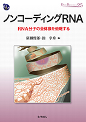
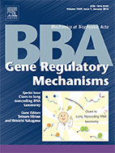
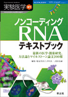
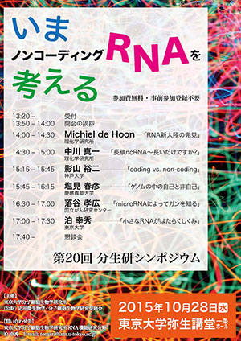
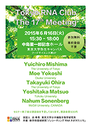

お知らせ
本新学術領域が関係するミーティングなどの最新情報をご案内します。
第22回 Tokyo RNA Club のご案内
 来る12月3日(土)、東京大学武田ホールにて、本領域後援の第22回 Tokyo RNA Club が開催されます。Eric Lai博士、Paul Anderson博士、Bill Theurkauf博士など、RNA研究の第一人者が一堂に会し、最新の知見を紹介していただく予定です。参加費は無料ですが、事前参加登録が必要です。こちらのページからお早めにお申し込み下さい。
来る12月3日(土)、東京大学武田ホールにて、本領域後援の第22回 Tokyo RNA Club が開催されます。Eric Lai博士、Paul Anderson博士、Bill Theurkauf博士など、RNA研究の第一人者が一堂に会し、最新の知見を紹介していただく予定です。参加費は無料ですが、事前参加登録が必要です。こちらのページからお早めにお申し込み下さい。
第21回 Tokyo RNA Clubのお知らせ
来る7月25日（月）、東京御茶ノ水駅前の東京医科歯科大学にて、第21回Tokyo RNA Clubが開催されます。気鋭の研究者・大学院生から最新の知見を紹介していただく予定です。参加費は無料、事前参加登録も不要で、RNA研究に興味を持つ方ならどなたでも参加可能です。終了後には簡単な懇親会を企画しますので、併せてご参加ください。
なお、この第21回Tokyo RNA Clubの一部は、東京医科歯科大学難治疾患研究所の第550回難研セミナー/第123回難治疾患共同研究拠点セミナーとして開催されるものです。
「ノンコーディングRNA―RNA分子の全体像を俯瞰する―」が発刊されました

国際シンポジウム「Clues to Non-coding RNA Taxonomy」のご案内
 来る6月27日(月)、東京大学弥生講堂一条ホールにて、本領域主催の国際シンポジウム「Clues to Non-coding RNA Taxonomy」を開催いたします。Phillip Zamore博士やIngrid Grummt博士など、non-coding RNA研究の第一人者が一堂に会し、最新の知見を紹介していただく予定です。参加費は無料ですが、事前参加登録が必要です。会場の席数が限られておりますので、こちらのページからお早めにお申し込み下さい。
来る6月27日(月)、東京大学弥生講堂一条ホールにて、本領域主催の国際シンポジウム「Clues to Non-coding RNA Taxonomy」を開催いたします。Phillip Zamore博士やIngrid Grummt博士など、non-coding RNA研究の第一人者が一堂に会し、最新の知見を紹介していただく予定です。参加費は無料ですが、事前参加登録が必要です。会場の席数が限られておりますので、こちらのページからお早めにお申し込み下さい。
レビュー集「Clues to long noncoding RNA taxonomy」が発刊されました

第18回 Tokyo RNA Club のご案内
来る1月14日、リボソーム研究の第一人者であり、2009年にノーベル化学賞を受賞したVenki Ramakrishnan博士(MRC)の来日にあたり、第18回 Tokyo RNA Clubが開催されます。詳しくはポスターをご覧下さい。
参加無料・事前登録不要です。皆様のご参加をお待ちしています。
日程： 2016年1月14日(木)
時間： 13:20〜17:30
※18時より懇親会を開催します。
場所： 東京大学 武田ホール (武田先端知ビル 5階)
「ノンコーディングRNAテキストブック」が発行されました

RNAiの発見からこれまで急速に進んできたノンコーディングRNA研究の総集編！ マイルストーン論文200報分の研究史から，知っておいて損はないCLIPやCRISPRなどの実験手法までを1冊に凝集！詳しくはこちら。
第20回分生研シンポジウム「いまノンコーディングRNAを考える」のご案内

参加無料・事前登録不要です。皆様のご参加をお待ちしています。
日程： 2015年10月28日(水)
時間： 13:50〜17:30
場所： 東京大学 弥生講堂 一条ホール
九州大学生体防御医学研究所附属トランスオミクス医学研究センター 教授募集
九州大学生体防御医学研究所では、トランスオミクス医学研究センターを設置し、ゲノム・エピゲノム・トランスクリプトーム・プロテオーム・メタボロームのオミクスデータを横断的に取得し、それらを統合して新たな知識を発掘・展開する研究を推進しています。今回は、新設のトランスクリプトミクス分野において新たな領域を開拓する意欲のある方を募集します。着任後、准教授１名及び助教１名を新たに採用することができます。
第17回 Tokyo RNA Club のご案内

参加無料・事前登録不要です。皆様のご参加をお待ちしています。
日程： 2015年6月16日(火)
時間： 15:30〜18:00
場所： 東京大学 中島董一郎記念ホール (本郷キャンパス弥生地区・フードサイエンス棟）